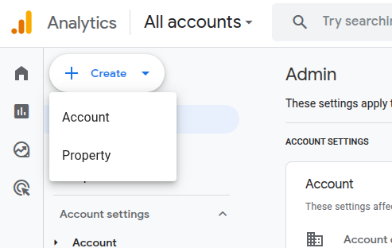
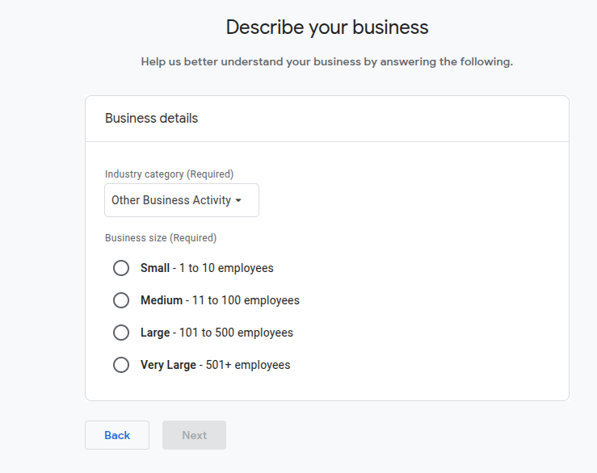
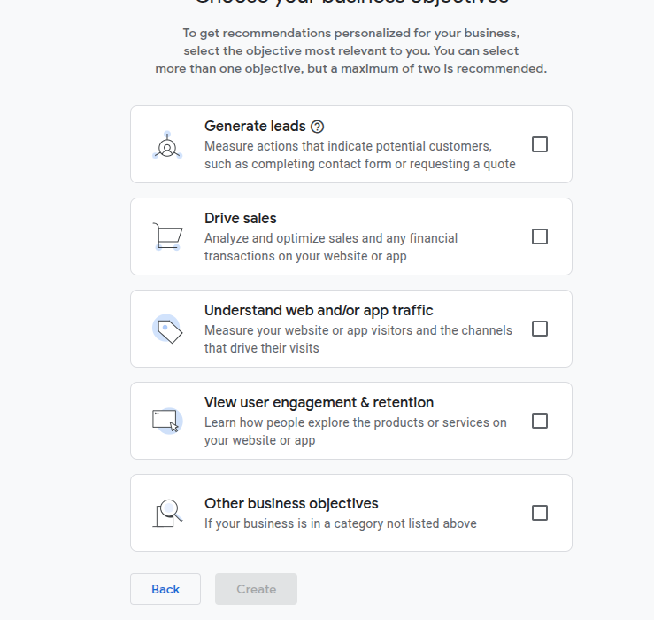
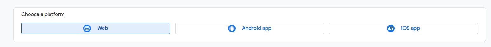
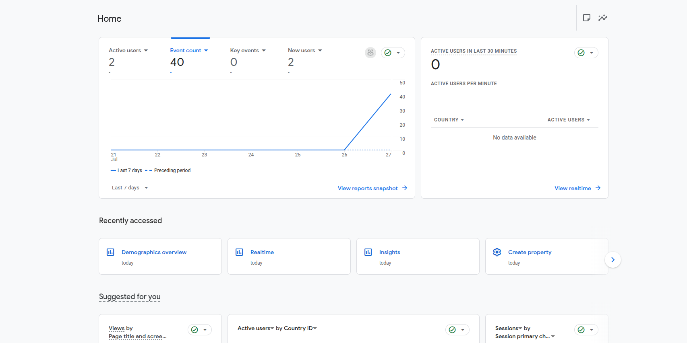

How I set up Google Analytics with my GitHub Portfolio
In this blog I'm going to show you how to set up your own Google Analytics tracking to any of your personal projects, portfolios or any website you want!
First, I set up a Google Analytics account by logging in using my Google Gmail Single Sign-on Account (SSO).
In the admin account click on the create button located on the top left hand side of the screen and select property.
Enter your property name, timezone and currency.
Step 2 is to fill out your business details if you're not sure about your industry category you can just fill out 'Other Business Activity'
“If you're running an e-commerce site, you might choose options like ‘Drive sales’ or ‘Generate leads’. For a personal portfolio, I selected options like ‘Understand web traffic’ and ‘View user engagement’.”
For the next step select web and fill out your websites URL and stream name this can just be something like 'My portfolio site'.

Once you've got your Google tag information you can copy and paste this at the bottom of each page of your website. This is at the end of your code just before the /body tag.
<!-- Google tag (gtag.js) -->
<script async src="https://www.googletagmanager.com/gtag/js?id=G-EZQQG81GBC"></script>
<script>
window.dataLayer = window.dataLayer || [];
function gtag(){dataLayer.push(arguments);}
gtag('js', new Date());
gtag('config', 'G-EZQQG81GBC');
</script>
If you're working with a content management system (CMS) such as WordPress you can install a WordPress plugin for GA4 and log in the Google Gmail used to create the stream and WordPress or other CMS platforms will automatically update the code to input this Google tag inside.
You may need to wait up to 24 hours for your GA4 to catchup with the updates, moving around your website and going through various pages can help with this process to pick up some activity.
Once it has updated your dashboard on Google Analytics should look something like this:
The more data it collects the more you can start using that data to predict where the majority of users are directed and where you can start updating or creating AD campaigns etc.
I hope this tutorial has helped you to understand GA4 and the ease of access to start getting your website up and running collecting data and how users are viewing your website.